METER / GAUGE SYSTEM > SYSTEM DESCRIPTION |
| METER GAUGE AND WARNING/INDICATOR |
| *1 | Engine Coolant Temperature Receiver Gauge | *2 | Multi-information Display
|
| *3 | Fuel Receiver Gauge | *4 | Tachometer |
| *5 | Shift Indicator | *6 |
|
| *7 | Speedometer | - | - |
| Item | Details |
| Speedometer | Based on a signal received from the wheel speed sensors, the skid control ECU calculates the vehicle speed and transmits data to the combination meter (CAN). |
| Tachometer | The combination meter receives an engine speed signal from the ECM and the gauge needle operates (CAN). |
| Engine coolant temperature receiver gauge | The combination meter receives an engine coolant temperature signal from the ECM and the gauge needle operates (CAN). |
| Fuel receiver gauge | The combination meter receives fuel amount information measured by the fuel sender gauge and the gauge needle operates (Direct line). |
| Item | Details |
| Turn signal indicator light (LH/RH) 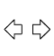 | Receives a turn signal from the flasher relay (Direct line). |
| CHARGE warning light | Receives malfunction signals from the generator (Direct line). |
| DOOR warning light 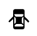 | The open door indicator comes on when a signal is received from the main body ECU (CAN). |
| Multi-terrain select indicator light*1 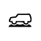 | Receives multi-terrain select signals from the driving support switch control ECU (CAN). |
| CRAWL indicator light*2 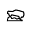 | Receives CRAWL signals from the skid control ECU (CAN). |
| Kinetic dynamic suspension system indicator light 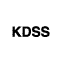 | Receives kinetic dynamic suspension system signals from the stabilizer control ECU (CAN). |
| 2nd START indicator light 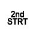 | Receives a 2nd START switch on signal from the ECM (CAN). |
| PCS indicator light*3 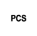 | Receives a PCS indicator light signal from the seat belt control ECU (CAN). |
| ABS warning light 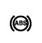 | Receives malfunction signals from the skid control ECU (CAN). |
| Brake warning light 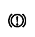 |
|
| MIL 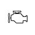 | Receives malfunction signals from the ECM (Direct line). |
| VSC OFF indicator light 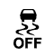 | Receives VSC OFF signals from the skid control ECU (CAN). |
| SLIP indicator light 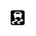 | Receives SLIP indicator light signals from the skid control ECU (CAN). |
| Downhill assist control indicator light*4 | Receives downhill assist control signals from the skid control ECU (CAN). |
| FRONT FOG indicator light 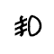 | The indicator turns on when a FRONT FOG illumination command signal is received (CAN). |
| REAR FOG indicator light*5 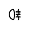 | The indicator turns on when a REAR FOG illumination command signal is received (CAN). |
| TAIL indicator light 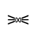 | The indicator turns on when a taillight illumination signal is received (CAN). |
| BEAM indicator light 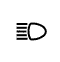 | Receives BEAM indicator light signals from the main body ECU (CAN). |
| Driver side seat belt warning light 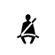 | Receives driver seat belt signals (unfastened) from the main body ECU (CAN). |
| Master warning light 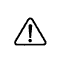 | Receives warning signals from sensors and ECUs (CAN). |
| SRS warning light | Receives malfunction signals from the center airbag sensor (CAN). |
| Cruise set indicator 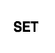 | Receives a cruise control switch signal from the ECM (CAN). |
| Eco driving indicator light | Receives an ecology lamp indicator signal from the ECM (CAN). |
| Cruise indicator 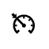 | Receives a cruise control switch signal from the ECM (CAN). |
| Radar cruise indicator light*6 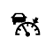 | Receives radar cruise indicator signals from the driving support ECU (CAN). |
| Clearance sonar indicator light*7, *8 | Receives clearance sonar indicator light signals from the parking assist ECU*7 or clearance warning ECU*8 (CAN). |
| AFS OFF indicator light | Receives AFS OFF indicator signals from the headlight swivel ECU (CAN). |
| FUEL warning light 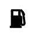 | Receives signals from the fuel sender gauge indicating low or no fuel (Direct line). |
| 4LO indicator light 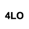 | Receives 4LO indicator light signals from the four wheel drive control ECU (CAN). |
| Center differential lock indicator light 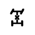 | Receives center differential lock signals from the four wheel drive control ECU. |
| MULTI-INFORMATION DISPLAY |
| 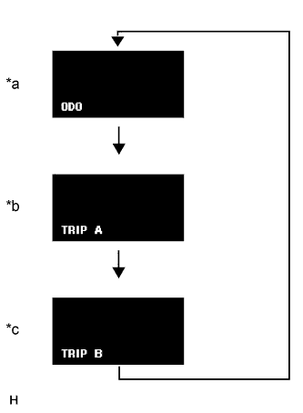 |
The information displayed changes in the following order each time the trip switch is pressed.
| *a | ODO |
| *b | TRIP A |
| *c | TRIP B |